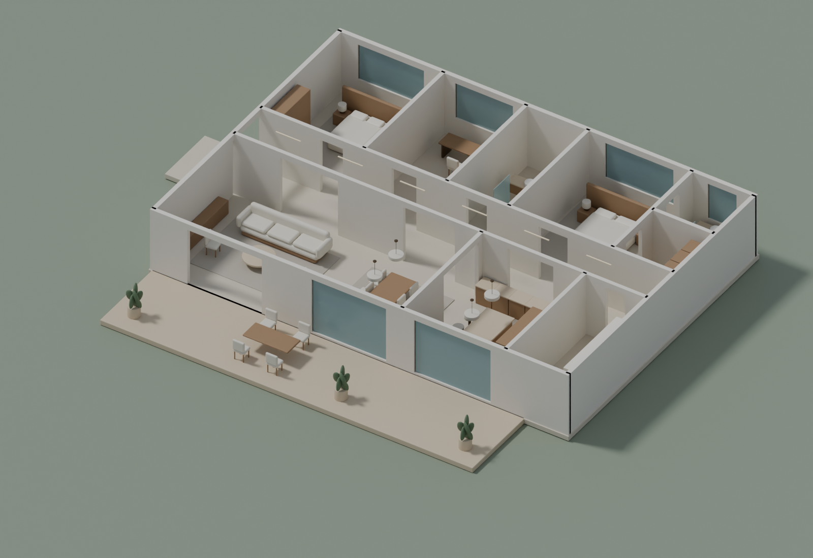
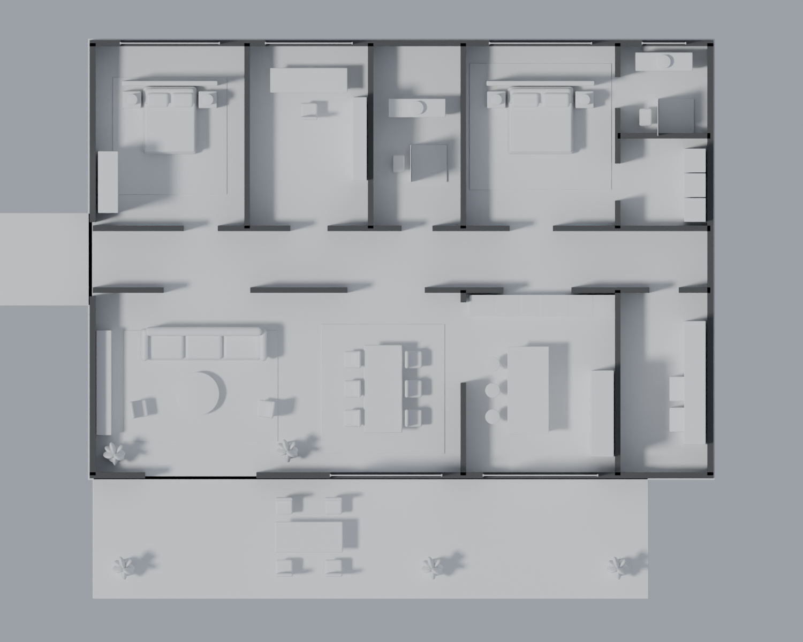
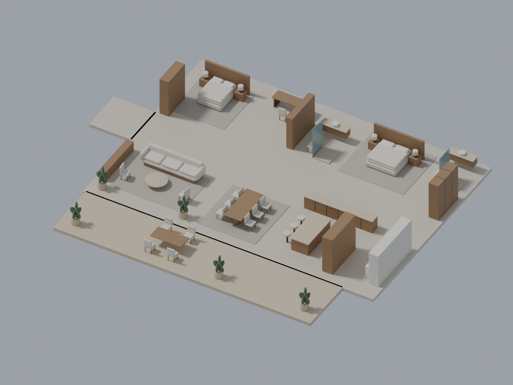
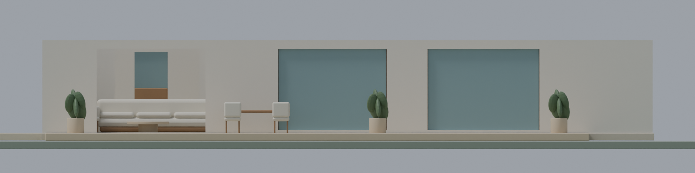
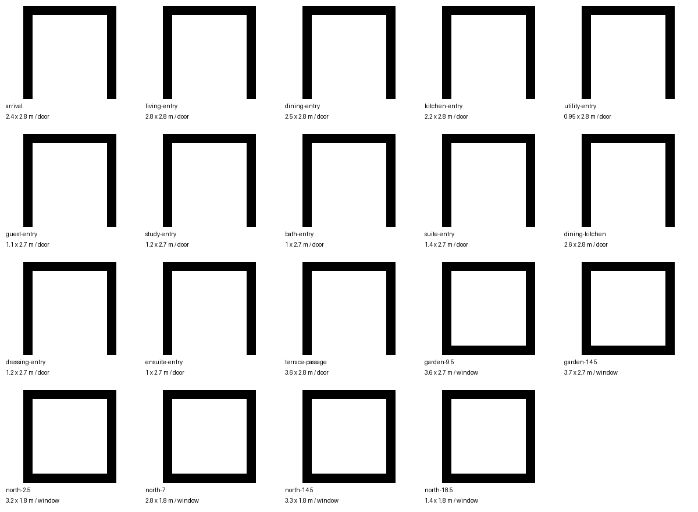

Better Homes / Interior design direction 01A warm, modern home.
Rooms that belong together.
BLENDER CONCEPT • AWAITING LAYOUT REVIEWA complete home with generous shared spaces, a private bedroom wing and a direct connection to the garden. Oak joinery, softly textured plaster, honed stone and tailored upholstery establish the proposed palette.

Actual Blender geometry at metre scale. Ceiling removed for layout review. Furniture, materials and planting are concept studies; this is not the finished realistic interior.Believable scale3.1 m ceilings, a 2 m shared gallery and a generous 2.4 m arrival opening.
Enter each roomHuman-height views travel through scheduled doors. Return to the gallery between rooms; camera paths must be collision-checked.
Layered realismNext stage: measured PBR textures, fabric detail, stone variation, daylight and fixture-matched baked lighting.
Proposed material direction
Soft plaster
Natural oak
Honed travertine
Tailored linen
Aged bronze
Garden sage
Review the connected plan
North / upper row: guest bedroom, study, guest bathroom, primary bedroom, dressing and ensuite. South / lower row: living and dining, kitchen and utility. The garden terrace lies along the south facade; entry is from the west.

Both layers are projections of the same Blender scene. The ceiling layer shows proposed hanging fixtures and gallery lights.| Space | Planning bay | Location |
|---|
| Living room | 7 × 6 m | Garden / shared wing |
| Dining | 5 × 6 m | Garden / shared wing |
| Kitchen | 5 × 6 m | Garden / shared wing |
| Utility | 3 × 6 m | Garden / shared wing |
| Guest bedroom | 5 × 6 m | Private wing |
| Study | 4 × 6 m | Private wing |
| Guest bathroom | 3 × 6 m | Private wing |
| Primary bedroom | 5 × 6 m | Private wing |
| Dressing | 3 × 3 m | Private wing |
| Ensuite | 3 × 3 m | Private wing |
| Garden terrace | 18 × 4 m | Garden / shared wing |
Furniture proportions

Native Blender furniture concepts in their actual positions. These define proportions and placement for review; upholstery seams, final joinery and surface detail follow layout approval.Facade & openings

The living room opens directly onto the terrace. Dining and kitchen glazing face the garden.
Opening schedule reference sheet

What happens after this review
- Approve or revise the room layout and warm modern material direction.
- Build detailed Blender interiors and review interior renders, including ceilings and contact details.
- Export textured assets, implement connected room navigation, and verify the actual website on desktop and mobile.
The current website model has not been replaced. This package is a reviewable concept, not a completed photorealistic build. No paid asset generation has been used.
Blender concept source · Design brief · Room and camera schedule